स्कन्ध 3 · अध्याय 27
श्लोक १
भगवानुवाच–
अथ ते सम्प््रावक्ष्यामि तत्त्वानां लक्षणं पृथक् ।
यद् विदित्वा विमुच्येत पुरुषः प््र•कृतैर्गुणैः।। १ ।।
अथ ते सम्प््रावक्ष्यामि तत्त्वानां लक्षणं पृथक् ।
यद् विदित्वा विमुच्येत पुरुषः प््र•कृतैर्गुणैः।। १ ।।
श्लोक २
ज्ञानं निःश्रेयसार्थाय पुरुषस्यात्मदर्शनम् ।
यदाहुर्वर्णये तत् ते हृदयग्रन्थिभेदनम्।। २ ।।
यदाहुर्वर्णये तत् ते हृदयग्रन्थिभेदनम्।। २ ।।
श्लोक ३
अनादिरात्मा पुरुषो निर्गुणः प््राकृतेः परः ।
प््रात्यग्धामा स्वयंज्योतिर्विश्वं येन समन्वितम्।। ३ ।।
प््रात्यग्धामा स्वयंज्योतिर्विश्वं येन समन्वितम्।। ३ ।।
भागवततात्पर्यनिर्णय
श्लोक ४
न जातो न म्रियेतात्मा स हि देहाद्युपाधिभिः ।
निमित्तैरात्ततद्धर्मा यथा स्वप्ने तदीक्षिता।। ४ ।।
निमित्तैरात्ततद्धर्मा यथा स्वप्ने तदीक्षिता।। ४ ।।
भागवततात्पर्यनिर्णय
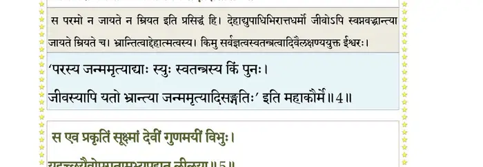
श्लोक ५
स एव प््राकृतिं सूक्ष्मां देवीं गुणमयीं विभुः ।
यदृच्छयैवोपगतामभ्यपद्यत लीलया।। ५ ।।
यदृच्छयैवोपगतामभ्यपद्यत लीलया।। ५ ।।
भागवततात्पर्यनिर्णय
श्लोक ६
गुणैर्विचित्राः सृजतीं सरूपाः प््राकृतिं प््राजाः ।
विलोक्य मुमुहे सद्यः स इह ज्ञानगूहया।। ६ ।।
विलोक्य मुमुहे सद्यः स इह ज्ञानगूहया।। ६ ।।
भागवततात्पर्यनिर्णय
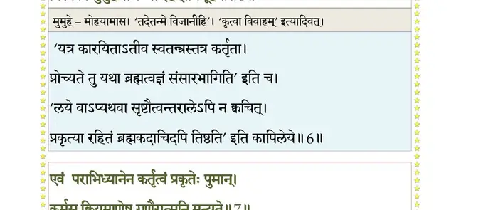
श्लोक ७
एवं पराभिध्यानेन कर्तृत्वं प््राकृतेः पुमान् ।
कर्मसु क्रियमाणेषु गुणैरात्मनि मन्यते।। ७ ।।
कर्मसु क्रियमाणेषु गुणैरात्मनि मन्यते।। ७ ।।
भागवततात्पर्यनिर्णय
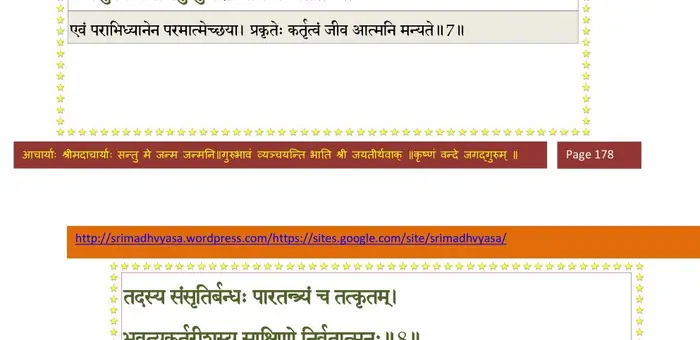
श्लोक ८
तदस्य संसृतिर्बन्धः पारतन्त्र्यं च तत्कृतम् ।
भवत्यकर्तुरीशस्य साक्षिणो निर्वृतात्मनः।। ८ ।।
भवत्यकर्तुरीशस्य साक्षिणो निर्वृतात्मनः।। ८ ।।
भागवततात्पर्यनिर्णय
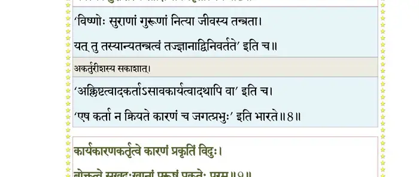
श्लोक ९
कार्यकारणकर्तृत्वे कारणं प््राकृतिं विदुः ।
भोक्तृत्वे सुखदुःखानां पुरुषः प््राकृतेः परः।। ९ ।।
भोक्तृत्वे सुखदुःखानां पुरुषः प््राकृतेः परः।। ९ ।।
भागवततात्पर्यनिर्णय
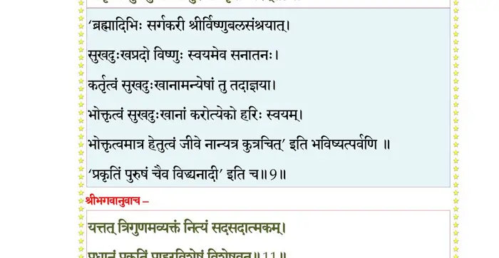
श्लोक १०
देवहूतिरुवाच–
प््राकृतेः पुरुषस्यापि लक्षणं पुरुषोत्तम ।
ब्रूहि कारणयोरस्य सदसच्च यदात्मकम्।। १० ।।
प््राकृतेः पुरुषस्यापि लक्षणं पुरुषोत्तम ।
ब्रूहि कारणयोरस्य सदसच्च यदात्मकम्।। १० ।।
श्लोक ११
भगवानुवाच–
यत् तत् त्रिगुणमव्यक्तं नित्यं सदसदात्मकम् ।
प््राधानं प््राकृतिं प््र•हुरविशेषं विशेषवत्।। ११ ।।
यत् तत् त्रिगुणमव्यक्तं नित्यं सदसदात्मकम् ।
प््राधानं प््राकृतिं प््र•हुरविशेषं विशेषवत्।। ११ ।।
भागवततात्पर्यनिर्णय
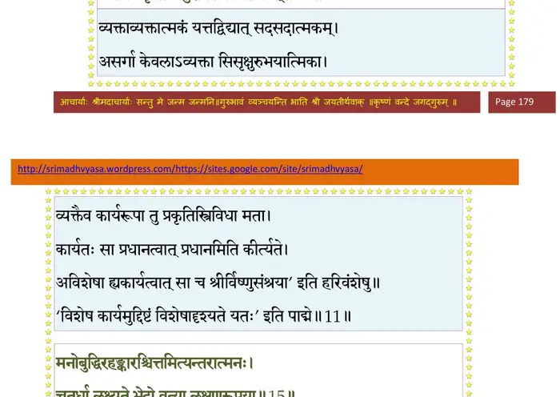
श्लोक १२
पञ्चभिः पञ्चभिर्ब्रह्म चतुर्भिर्दशभिस्तथा ।
एतच्चतुर्विंशतिकं गणं प््र•धानिकं विदुः।। १२ ।।
एतच्चतुर्विंशतिकं गणं प््र•धानिकं विदुः।। १२ ।।
श्लोक १३
महाभूतानि पञ्चैव भूरापोऽग्निर्मरुन्नभः ।
तन्मात्राणि च तावन्ति गन्धादीनि मतानि मे।। १३ ।।
तन्मात्राणि च तावन्ति गन्धादीनि मतानि मे।। १३ ।।
श्लोक १४
इन्द्रियाणि दश श्रोत्रं त्वग्दृग्रसननासिकम् ।
वाक् करौ चरणौ मेढ्रं पायुर्दशम उच्यते।। १४ ।।
वाक् करौ चरणौ मेढ्रं पायुर्दशम उच्यते।। १४ ।।
श्लोक १५
मनो बुद्धिरहङ्कारश्चित्तमित्यन्तरात्मनः ।
चतुर्धा लक्ष्यते भेदो वृत्त्या लक्षणरूपया।। १५ ।।
चतुर्धा लक्ष्यते भेदो वृत्त्या लक्षणरूपया।। १५ ।।
भागवततात्पर्यनिर्णय
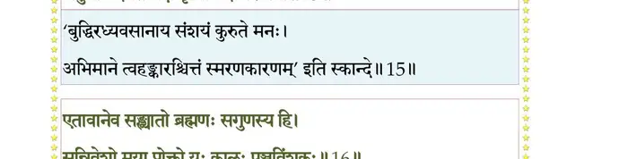
श्लोक १६
एतावानेव संख्यातो ब्रह्मणः सगुणस्य हि ।
सन्निवेशो मया प््र•ेक्तो यः कालः पञ्चविंशकः।। १६ ।।
सन्निवेशो मया प््र•ेक्तो यः कालः पञ्चविंशकः।। १६ ।।
भागवततात्पर्यनिर्णय
श्लोक १७
प््राभावं पौरुषं प््र•हुः कालमेके यतो भयम् ।
अहङ्कारविमूढस्य कर्तुः प््राकृतिमीयुषः।। १७ ।।
अहङ्कारविमूढस्य कर्तुः प््राकृतिमीयुषः।। १७ ।।
भागवततात्पर्यनिर्णय
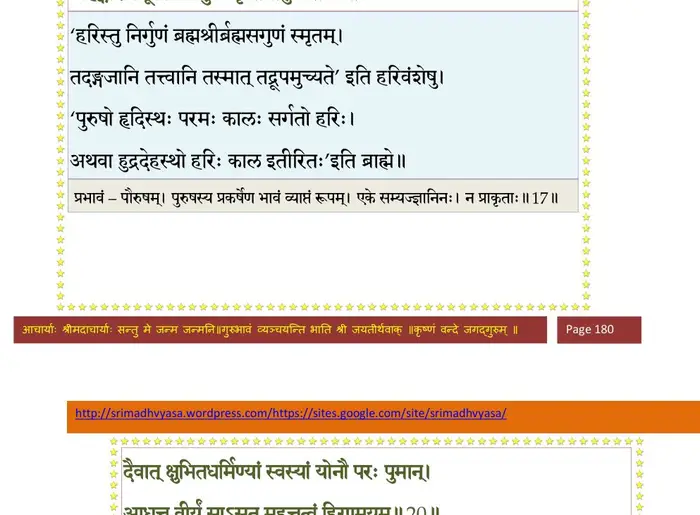
श्लोक १८
प््राकृतेर्गुणसाम्यस्य निर्विशेषस्य मानवि ।
चेष्टा यतः स भगवान् काल इत्युपलक्षितः।। १८ ।।
चेष्टा यतः स भगवान् काल इत्युपलक्षितः।। १८ ।।
श्लोक १९
अन्तः पुरुषरूपेण कालरूपेण यो बहिः ।
समन्वेत्येष सत्त्वानां भगवानात्ममायया।। १९ ।।
समन्वेत्येष सत्त्वानां भगवानात्ममायया।। १९ ।।
श्लोक २०
दैवात् क्षुभितधर्मिण्यां स्वस्यां योनौ परः पुमान् ।
आधत्त वीर्यं साऽसूत महत्तत्त्वं हिरण्मयम्।। २० ।।
आधत्त वीर्यं साऽसूत महत्तत्त्वं हिरण्मयम्।। २० ।।
भागवततात्पर्यनिर्णय
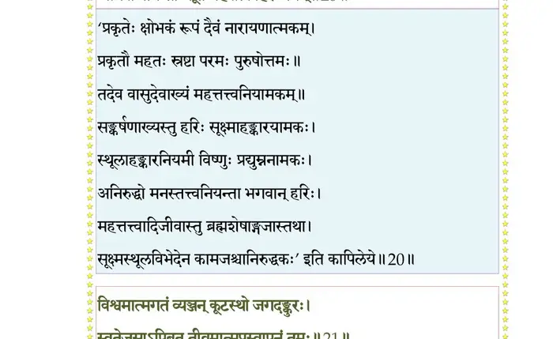
श्लोक २१
विश्वमात्मगतं व्यञ्जन् कूटस्थो जगदङ्कुरः ।
स्वतेजसाऽपिबत् तीव्रमात्मप््रास्वापनं तमः।। २१ ।।
स्वतेजसाऽपिबत् तीव्रमात्मप््रास्वापनं तमः।। २१ ।।
भागवततात्पर्यनिर्णय
श्लोक २२
यत् तत् सत्वगुणं स्वच्छं शान्तं भगवतः पदम् ।
यदाहुर्वासुदेवाख्यं चित्तं तन्महदात्मकम्।। २२ ।।
यदाहुर्वासुदेवाख्यं चित्तं तन्महदात्मकम्।। २२ ।।
भागवततात्पर्यनिर्णय
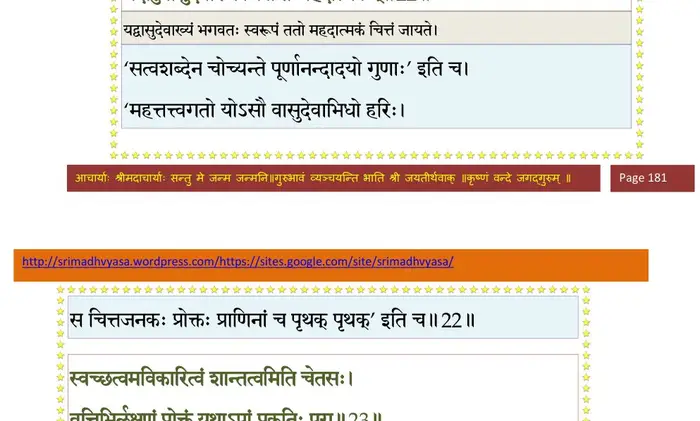
श्लोक २३
स्वच्छत्वमविकारित्वं शान्तत्वमिति चेतसः ।
वृत्तिभिर्लक्षणं प््र•ेक्तं यथाऽपां प््राकृतिः परा।। २३ ।।
वृत्तिभिर्लक्षणं प््र•ेक्तं यथाऽपां प््राकृतिः परा।। २३ ।।
भागवततात्पर्यनिर्णय
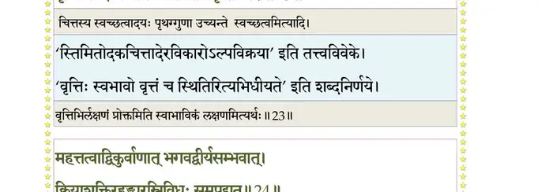
श्लोक २४
महत्तत्त्वाद् विकुर्वाणाद् भगवद्वीर्यसम्भवात् ।
क्रियाशक्तिरहङ्कारस्त्रिविधः समपद्यत।। २४ ।।
क्रियाशक्तिरहङ्कारस्त्रिविधः समपद्यत।। २४ ।।
भागवततात्पर्यनिर्णय
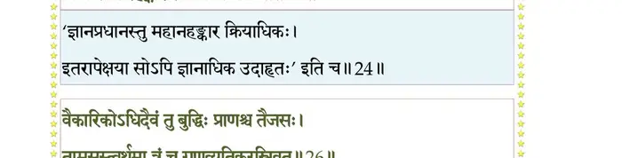
श्लोक २५
वैकारिकस्तैजसश्च तामसश्च यतो भवः ।
मनसश्चेन्द्रियाणां च भूतानां महतामपि।। २५ ।।
मनसश्चेन्द्रियाणां च भूतानां महतामपि।। २५ ।।
श्लोक २६
वैकारिकोऽधिदैवं तु बुद्धिः प््र•णश्च तैजसः ।
तामसस्त्वर्थमात्रं च गुणव्यतिकरस्त्रिवृत्।। २६ ।।
तामसस्त्वर्थमात्रं च गुणव्यतिकरस्त्रिवृत्।। २६ ।।
भागवततात्पर्यनिर्णय
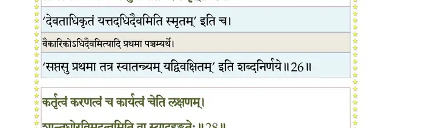
श्लोक २७
सहस्रशिरसं साक्षाद् यमनन्तं प््राचक्षते ।
संकर्षणाख्यं पुरुषं भूतेन्द्रियमनोमयम्।। २७ ।।
संकर्षणाख्यं पुरुषं भूतेन्द्रियमनोमयम्।। २७ ।।
श्लोक २८
कर्तृत्वं करणत्वं च कार्यत्वं चेति लक्षणम् ।
शान्तघोरविमूढत्वमिति वा स्यादहंकृतेः।। २८ ।।
शान्तघोरविमूढत्वमिति वा स्यादहंकृतेः।। २८ ।।
भागवततात्पर्यनिर्णय
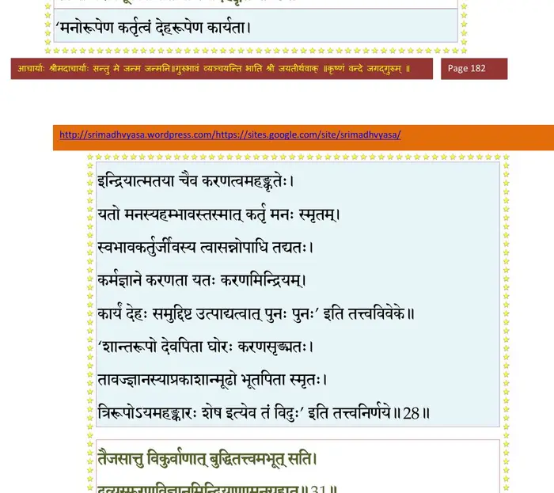
श्लोक २९
वैकारिकाद् विकर्वाणान्मनस्तत्त्वमजायत ।
यत् सङ्कल्पविकल्पाभ्यां वर्तते कामसम्भवः।। २९ ।।
यत् सङ्कल्पविकल्पाभ्यां वर्तते कामसम्भवः।। २९ ।।
श्लोक ३०
यद् विदुर्ह्यनिरुद्धाख्यं हृषीकाणामधीश्वरम् ।
शारदेन्दीवरश्यामं संराध्यं योगिभिः शनैः।। ३० ।।
शारदेन्दीवरश्यामं संराध्यं योगिभिः शनैः।। ३० ।।
श्लोक ३१
तैजसात् तु विकुर्वाणाद् बुद्धितत्त्वमभूत् सति ।
द्रव्यस्फुरणविज्ञानमिन्द्रियाणामनुग्रहात्।। ३१ ।।
द्रव्यस्फुरणविज्ञानमिन्द्रियाणामनुग्रहात्।। ३१ ।।
भागवततात्पर्यनिर्णय
श्लोक ३२
संशयोऽथ विपर्यासो निश्चयः स्मृतिरेव च ।
स्वाप इत्युच्यते बुद्धेर्लक्षणं वृत्तितः पृथक्।। ३२ ।।
स्वाप इत्युच्यते बुद्धेर्लक्षणं वृत्तितः पृथक्।। ३२ ।।
भागवततात्पर्यनिर्णय
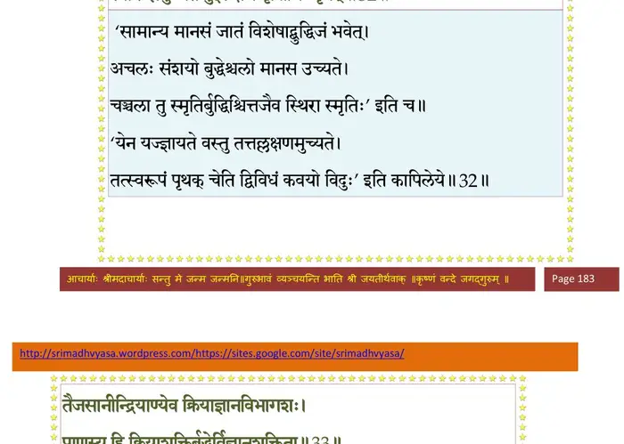
श्लोक ३३
तैजसानीन्द्रियाण्येव क्रियाज्ञानविभागशः ।
प््र•णस्य हि क्रियाशक्तिर्बुद्धेर्विज्ञानशक्तिता।। ३३ ।।
प््र•णस्य हि क्रियाशक्तिर्बुद्धेर्विज्ञानशक्तिता।। ३३ ।।
श्लोक ३४
तामसाच्च विकुर्वाणाद् भगवद्वीर्यचोदितात् ।
शब्दमात्रमभूत् तस्मान्नभः श्रोत्रं तु शब्दगम्।। ३४ ।।
शब्दमात्रमभूत् तस्मान्नभः श्रोत्रं तु शब्दगम्।। ३४ ।।
भागवततात्पर्यनिर्णय
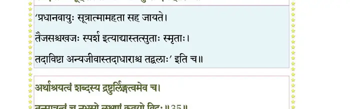
श्लोक ३५
अर्थाश्रयत्वं शब्दस्य द्रष्टुर्लिङ्गत्वमेव च ।
तन्मात्रत्वं च नभसो लक्षणं कवयो विदुः।। ३५ ।।
तन्मात्रत्वं च नभसो लक्षणं कवयो विदुः।। ३५ ।।
भागवततात्पर्यनिर्णय
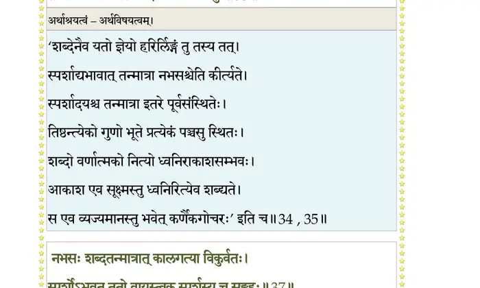
श्लोक ३६
भूतानां छिद्रदातृत्वं बहिरन्तरमेव च ।
प््र•णेन्द्रियात्मधिष्ण्यत्वं नभसो वृत्तिलक्षणम्।। ३६ ।।
प््र•णेन्द्रियात्मधिष्ण्यत्वं नभसो वृत्तिलक्षणम्।। ३६ ।।
श्लोक ३७
नभसः शब्दतन्मात्रात् कालगत्या विकुर्वतः ।
स्पर्शोऽभवत् ततो वायुस्त्वक् स्पर्शस्य च संग्रहः।। ३७ ।।
स्पर्शोऽभवत् ततो वायुस्त्वक् स्पर्शस्य च संग्रहः।। ३७ ।।
भागवततात्पर्यनिर्णय
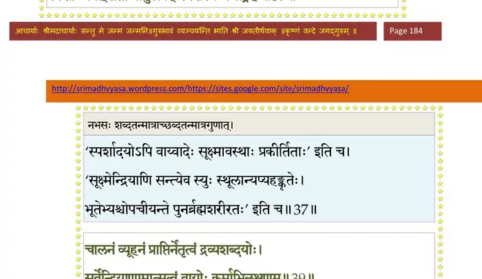
श्लोक ३८
मृदुत्वं कठिणत्वं च शैत्यमुष्णत्वमेव च ।
एतत् स्पर्शस्य स्पर्शत्वं तन्मात्रत्वं नभस्वतः।। ३८ ।।
एतत् स्पर्शस्य स्पर्शत्वं तन्मात्रत्वं नभस्वतः।। ३८ ।।
श्लोक ३९
चालनं व्यूहनं प््र•प्तिर्नेतृत्वं द्रव्यशब्दयोः ।
सर्वेन्द्रियाणामात्मत्वं वायोः कर्माभिलक्षणम्।। ३९ ।।
सर्वेन्द्रियाणामात्मत्वं वायोः कर्माभिलक्षणम्।। ३९ ।।
भागवततात्पर्यनिर्णय
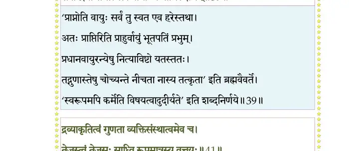
श्लोक ४०
वायोश्च स्पर्शतन्मात्राद् रूपं दैवेरितादभूत् ।
समुत्थितं ततस्तेजश्चक्षू रूपोपलम्भनम्।। ४० ।।
समुत्थितं ततस्तेजश्चक्षू रूपोपलम्भनम्।। ४० ।।
श्लोक ४१
द्रव्याकृतित्वं गुणता व्यक्तिसंस्थात्वमेव च ।
तेजस्त्वं तेजसः साध्वि रूपमात्रस्य वृत्तयः।। ४१ ।।
तेजस्त्वं तेजसः साध्वि रूपमात्रस्य वृत्तयः।। ४१ ।।
भागवततात्पर्यनिर्णय
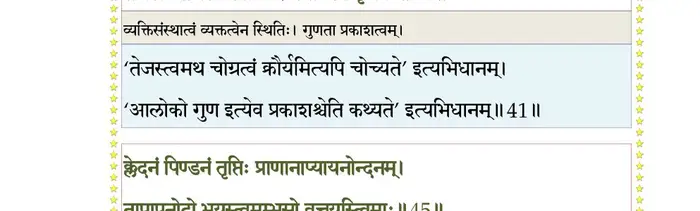
श्लोक ४२
द्योतनं पचनं पानमदनं हिममर्दनम् ।
तेजसो वृत्तयस्त्वेताः शोषणं क्षुत्तृडुद्भवः।। ४२ ।।
तेजसो वृत्तयस्त्वेताः शोषणं क्षुत्तृडुद्भवः।। ४२ ।।
श्लोक ४३
रूपमात्राद् विकुर्वाणाद् तेजसो दैवचोदितात् ।
रसमात्रमभूत् तस्मादम्भो जिह्वा रसग्रहः।। ४३ ।।
रसमात्रमभूत् तस्मादम्भो जिह्वा रसग्रहः।। ४३ ।।
श्लोक ४४
कषायो मधुरस्तिक्तः कट्वाम्ल इति नैकधा ।
भौतिकानां विकारेण रस एको विभिद्यते।। ४४ ।।
भौतिकानां विकारेण रस एको विभिद्यते।। ४४ ।।
श्लोक ४५
क्लेदनं पिण्डनं तृप्तिः प््र•णनाप्ययनोन्दनम् ।
तापापनोदो भूयस्त्वमम्भसो वृत्तयस्त्विमाः।। ४५ ।।
तापापनोदो भूयस्त्वमम्भसो वृत्तयस्त्विमाः।। ४५ ।।
भागवततात्पर्यनिर्णय
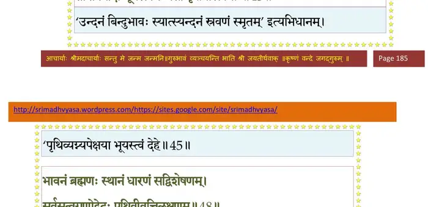
श्लोक ४६
रसमात्राद् विकुर्वाणादम्भसो दैवचोदितात् ।
गन्धमात्रमभूत् तस्मात् पृथ्वी घ्राणस्तु गन्धगः।। ४६ ।।
गन्धमात्रमभूत् तस्मात् पृथ्वी घ्राणस्तु गन्धगः।। ४६ ।।
श्लोक ४७
करम्भपूतिसौरभ्यशान्तोग्राम्लादिभिः पृथक् ।
द्रव्यावयववैषम्याद् गन्ध एको विभिद्यते।। ४७ ।।
द्रव्यावयववैषम्याद् गन्ध एको विभिद्यते।। ४७ ।।
श्लोक ४८
भावनं ब्रह्मणः स्थानं धारणं सद्विशेषणम् ।
सर्वसत्वगुणोद्भेदः पृथिवीवृत्तिलक्षणम्।। ४८ ।।
सर्वसत्वगुणोद्भेदः पृथिवीवृत्तिलक्षणम्।। ४८ ।।
भागवततात्पर्यनिर्णय
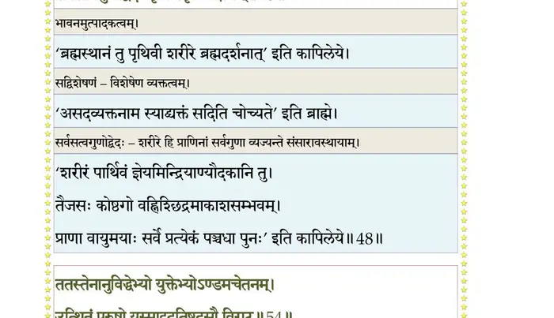
श्लोक ४९
नभोगुणविशेषोऽर्थो यस्य तच्छ्रोत्रमुच्यते ।
वायोर्गुणविशेषोऽर्थो यस्य तत् स्पर्शनं विदुः।। ४९ ।।
वायोर्गुणविशेषोऽर्थो यस्य तत् स्पर्शनं विदुः।। ४९ ।।
श्लोक ५०
तेजोगुणविशेषोऽर्थो यस्य तच्चक्षुरुच्यते ।
अम्भोगुणविशेषोऽर्थो यस्य तद् रसनं विदुः।। ५० ।।
अम्भोगुणविशेषोऽर्थो यस्य तद् रसनं विदुः।। ५० ।।
श्लोक ५१
भूमेर्गुणविशेषोऽर्थो यस्य स घ्राण उच्यते ।
परस्य दृश्यते धर्मो ह्यपरस्मिन् समन्वयात्।। ५१ ।।
परस्य दृश्यते धर्मो ह्यपरस्मिन् समन्वयात्।। ५१ ।।
श्लोक ५२
अतो विशेषो भावानां भूमावेवोपलक्ष्यते ।
एतान्यसंहत्य यदा महदादीनि सप्त वै।। ५२ ।।
एतान्यसंहत्य यदा महदादीनि सप्त वै।। ५२ ।।
श्लोक ५३
न शेकुः पुरुषं स्रष्टुं भोगायतनमञ्जसा ।
कालकर्मगुणोपेतो जगदादिरुपाविशत्।। ५३ ।।
कालकर्मगुणोपेतो जगदादिरुपाविशत्।। ५३ ।।
श्लोक ५४
ततस्तेनानुविद्धेभ्यस्तत्त्वेभ्योऽण्डमचेतनम् ।
उत्थितं पुरुषो यस्मादुदतिष्ठदसौ विराट्।। ५४ ।।
उत्थितं पुरुषो यस्मादुदतिष्ठदसौ विराट्।। ५४ ।।
भागवततात्पर्यनिर्णय
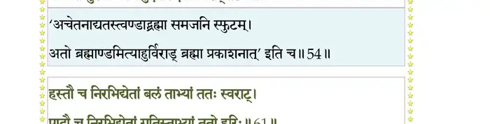
श्लोक ५५
एतदण्डं विशेषाख्यं क्रमवृद्धैर्दशोत्तरैः ।
तोयादिभिः परिवृतं प््राधानेनावृतं बहिः ।
यत्र लोकवितानोऽयं रूपं भगवतो हरेः।। ५५ ।।
तोयादिभिः परिवृतं प््राधानेनावृतं बहिः ।
यत्र लोकवितानोऽयं रूपं भगवतो हरेः।। ५५ ।।
श्लोक ५६
हिरण्मयादाण्डकोशादुत्थाय सलिले शयात् ।
तमाविश्य महादेवो बहुधा निर्बिभेद खम्।। ५६ ।।
तमाविश्य महादेवो बहुधा निर्बिभेद खम्।। ५६ ।।
श्लोक ५७
निरभिद्यतास्य प््राथमं मुखं वाणी ततोऽभवत् ।
वाण्या वह्निरथो नासे घ्राणोऽतः प््र•ण एतयोः।। ५७ ।।
वाण्या वह्निरथो नासे घ्राणोऽतः प््र•ण एतयोः।। ५७ ।।
श्लोक ५८
प््र•णाद् वायुरभिद्येतामक्षिणी चक्षुरेतयोः ।
तस्मात् सूर्योऽन्वभिद्येतां कर्णौ श्रोत्रं ततो दिशः।। ५८ ।।
तस्मात् सूर्योऽन्वभिद्येतां कर्णौ श्रोत्रं ततो दिशः।। ५८ ।।
श्लोक ५९
निर्बिभेद विराजस्त्वग् रोमश्मश्व्रादयस्ततः ।
ततश्चौषधयः पश्चाच्छिश्नं निर्बिभिदे ततः।। ५९ ।।
ततश्चौषधयः पश्चाच्छिश्नं निर्बिभिदे ततः।। ५९ ।।
श्लोक ६०
रेतस्तस्मादाप आसन् निरभिद्यत वै गुदम् ।
गुदादपानोऽपानाच्च मृत्युर्लोकभयङ्करः।। ६० ।।
गुदादपानोऽपानाच्च मृत्युर्लोकभयङ्करः।। ६० ।।
श्लोक ६१
हस्तौ च निरभिद्येतां बलं ताभ्यां ततः स्वराट् ।
पादौ च निरभिद्येतां गतिस्ताभ्यां ततो हरिः।। ६१ ।।
पादौ च निरभिद्येतां गतिस्ताभ्यां ततो हरिः।। ६१ ।।
भागवततात्पर्यनिर्णय
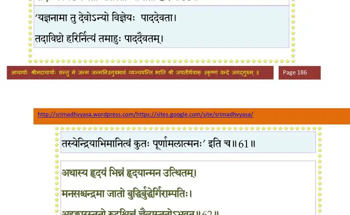
श्लोक ६२
नाड्योऽस्य निरभिद्यन्त ताभ्यो लोहितमाहृतम् ।
नद्यस्ततः समभवन्नुदरं निरभिद्यत।। ६२ ।।
नद्यस्ततः समभवन्नुदरं निरभिद्यत।। ६२ ।।
भागवततात्पर्यनिर्णय
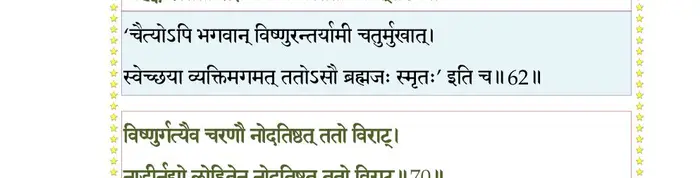
श्लोक ६३
क्षुत्पिपासे ततः स्यातां समुद्रस्तु तयोरभूत् ।
अथास्य हृदयं भिन्नं हृदयान्मन उत्थितम्।। ६३ ।।
अथास्य हृदयं भिन्नं हृदयान्मन उत्थितम्।। ६३ ।।
श्लोक ६४
मनसश्चन्द्रमा जातो बुद्धिर्बुद्धेर्गिरांपतिः ।
अहङ्कारस्ततो रुद्रश्चित्तं चैत्त्यस्ततोऽभवत्।। ६४ ।।
अहङ्कारस्ततो रुद्रश्चित्तं चैत्त्यस्ततोऽभवत्।। ६४ ।।
श्लोक ६५
एते ह्यभ्युत्थिता देवा नैवास्योत्त्थापनेऽशकन् ।
पुनराविविशुः खानि तमुत्थापयितुं क्रमात्।। ६५ ।।
पुनराविविशुः खानि तमुत्थापयितुं क्रमात्।। ६५ ।।
श्लोक ६६
वह्निर्वाचा मुखं भेजे नोदतिष्ठत् ततो विराट् ।
घ्राणेन नासिको वायुः नोदतिष्ठत् ततो विराट्।। ६६ ।।
घ्राणेन नासिको वायुः नोदतिष्ठत् ततो विराट्।। ६६ ।।
श्लोक ६७
अक्षिणी चक्षुषाऽऽदित्यो नोदनिष्ठत् ततो विराट् ।
श्रोत्रेण कर्णौ च दिशो नोदतिष्ठत् ततो विराट्।। ६७ ।।
श्रोत्रेण कर्णौ च दिशो नोदतिष्ठत् ततो विराट्।। ६७ ।।
श्लोक ६८
त्वचं रोमभिरोषध्यो नोदतिष्ठत् ततो विराट् ।
रेतसा शिश्नमापस्तु नोदतिष्ठत् ततो विराट्।। ६८ ।।
रेतसा शिश्नमापस्तु नोदतिष्ठत् ततो विराट्।। ६८ ।।
श्लोक ६९
गुदं मृत्युरपानेन नोदतिष्ठत् ततो विराट् ।
हस्ताविन्द्रो बलेनैव नोदतिष्ठत् ततो विराट्।। ६९ ।।
हस्ताविन्द्रो बलेनैव नोदतिष्ठत् ततो विराट्।। ६९ ।।
श्लोक ७०
विष्णुर्गत्यैव चरणौ नोदतिष्ठत् ततो विराट् ।
नाडीर्नद्यो लोहितेन नोदतिष्ठत् ततो विराट्।। ७० ।।
नाडीर्नद्यो लोहितेन नोदतिष्ठत् ततो विराट्।। ७० ।।
भागवततात्पर्यनिर्णय
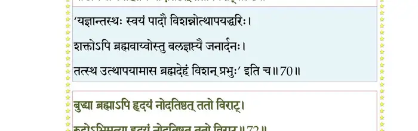
श्लोक ७१
क्षुत्तृड्भ्यामुदरं सिन्धुर्नोदतिष्ठत् ततो विराट् ।
हृदयं मनसा चन्द्रो नोदतिष्ठत् ततो विराट्।। ७१ ।।
हृदयं मनसा चन्द्रो नोदतिष्ठत् ततो विराट्।। ७१ ।।
श्लोक ७२
बुद्ध्या ब्रह्माऽपि हृदयं नोदतिष्ठत् ततो विराट् ।
रुद्रोऽभिमत्या हृदयं नोदतिष्ठत् ततो विराट्।। ७२ ।।
रुद्रोऽभिमत्या हृदयं नोदतिष्ठत् ततो विराट्।। ७२ ।।
भागवततात्पर्यनिर्णय
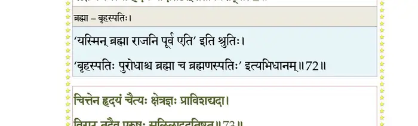
श्लोक ७३
चित्तेन हृदयं चैत्यः क्षेत्रज्ञः प््र•विशद् यदा ।
विराट् तदैव पुरुषः सलिलादुदतिष्ठत।। ७३ ।।
विराट् तदैव पुरुषः सलिलादुदतिष्ठत।। ७३ ।।
भागवततात्पर्यनिर्णय
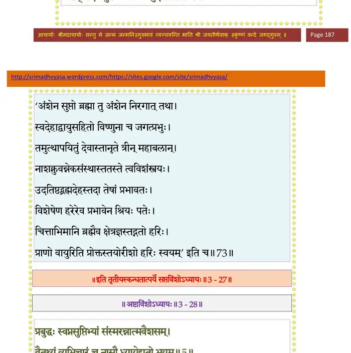
श्लोक ७४
यथा प््रासुप्तं पुरुषं प््र•णेन्द्रियमनोधियः ।
प््राभवन्ति विना येन नोत्थापयितुमोजसा।। ७४ ।।
प््राभवन्ति विना येन नोत्थापयितुमोजसा।। ७४ ।।
श्लोक ७५
तमस्मिन् प््रात्यगात्मानं धिया योगविपक्वया ।
भक्त्या विरक्त्या ज्ञानेन विविच्यात्मनि चिन्तयेत्।। ७५ ।।
भक्त्या विरक्त्या ज्ञानेन विविच्यात्मनि चिन्तयेत्।। ७५ ।।
।। इति श्रीमद्भागवते तृतीयस्कन्धे सप्तविंशोऽध्यायः ।।